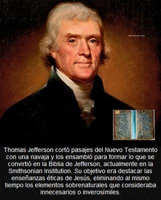

¿Sabías que Thomas Jefferson —sí, el tercer presidente de los Estados Unidos y uno de los Padres Fundadores de esa nación— creó su propio evangelio o versión biográfica de Jesús? Cuando se encontraba en las últimas décadas de su vida, Jefferson decidió un día en su estudio privado tomar una navaja y pegamento, y diferentes versiones del Nuevo Testamento, y ponerse a cortar y ordenar pasajes de los cuatro evangelios canónicos, tratando de dar forma a una narrativa centrada exclusivamente en las enseñanzas de Jesús, descartando milagros, profecías e interpretaciones teológicas que oscurecían lo que él consideraba el mensaje original. Decidió así omitir milagros, la resurrección y otros elementos sobrenaturales, enfocándose en ofrecer un retrato de Jesús centrado en la ética, la compasión y la sabiduría práctica.


El resultado fue lo que llegó a conocerse como «la Biblia de Jefferson», que aún se conserva en el Instituto Smithsoniano (Smithsonian Institution) en Washington D.C., institución estadounidense dedicada a la investigación científica.
Pero este experimento evangélico de Thomas Jefferson resulta hoy tan fascinante como incómodo. Fascinante, porque revela hasta qué punto uno de los Padres Fundadores de Estados Unidos se tomó en serio la tarea de someter la religión al tribunal de la razón. Incómodo, porque desmonta el mito —todavía muy difundido en ciertos círculos cristianos y nacionalistas estadounidenses— de que ese país nació bajo una fe cristiana homogénea y devota.
Resulta que entre finales de 1819 y principios de 1820, ya septuagenario y retirado en su residencia de Monticello, Virginia, Jefferson emprendió un trabajo que hoy parecería casi monástico: con una navaja, pegamento y paciencia infinita, recortó pasajes de distintas ediciones del Nuevo Testamento para construir un único relato continuo titulado The Life and Morals of Jesus of Nazareth (La vida y moral de Jesús de Nazaret). No fue un pasatiempo excéntrico ni una ocurrencia tardía, sino un ejercicio intelectual serio, coherente con toda una vida dedicada al pensamiento ilustrado.
Jefferson era un hombre extraordinariamente instruido. Además de inglés, leía griego, latín y francés, lo que le permitió comparar versiones bíblicas en varios idiomas: la King James Version, la Vulgata latina, textos griegos del Nuevo Testamento y traducciones francesas de su época. Y con ese arsenal filológico, seleccionó, ordenó y depuró el material evangélico según un criterio estrictamente racional.
Eliminó por completo la numeración de capítulos y versículos —que existía desde siglos antes— porque no quería un texto litúrgico ni doctrinal. Lo que buscaba era un relato coherente, despojado de milagros, ángeles, profecías supuestamente cumplidas, resurrección, y cualquier rastro de intervención sobrenatural. Y el resultado termina, significativamente, con Jesús fallecido y enterrado (nada de vuelto a la vida).
Porque para Jefferson, Jesús no era ningún «Dios» encarnado ni un ser sobrenatural. Era un hombre de carne y hueso, maestro moral excepcional, pero humano al fin. Admiraba la claridad ética de algunas de sus enseñanzas, lo que Jefferson interpretaba como un énfasis en la compasión y la justicia, pero consideraba que la teología cristiana posterior había corrompido ese mensaje original con mitología, superstición y dogmas absurdos.
Y este punto es crucial, porque Jefferson tampoco intentó demostrar la historicidad de Jesús. Porque aquí conviene ser claros: los evangelios canónicos no son documentos históricos, sino textos doctrinarios, escritos y reescritos con fines teológicos y apologéticos. Por lo que a partir de ellos no es posible establecer con rigor histórico si Jesús existió realmente o no.
Sin embargo, aun aceptando su carácter no histórico, los evangelios sí permiten algo: inferir la personalidad del personaje que describen, en caso de que hubiese existido alguien así. Y este enfoque fue llevado al extremo por el psiquiatra francés Charles Binet-Sanglé (1868–1941), quien analizó a Jesús desde una perspectiva clínica en su obra «La Locura de Jesús»[1].
Binet-Sanglé observó que el Jesús de los evangelios se expresa de manera predominante mediante parábolas, analogías y alegorías, un rasgo que, según la psiquiatría de su tiempo, era frecuente en sujetos con megalomanía, debido a una imaginación difusa y una fuerte tendencia a pensar en imágenes. Y tras un análisis minucioso del material evangélico, concluyó que el personaje presentaba rasgos compatibles con una esquizofrenia con delirios de teomegalomanía, es decir, la convicción patológica de ser una divinidad.
Más allá de que hoy podamos discutir o matizar ese diagnóstico con categorías psiquiátricas modernas, el punto es claro: un análisis no cristiano del Jesús evangélico no conduce a un ser divino, sino a un perfil humano, problemático y profundamente discutible. Incluso sus enseñanzas morales, tan idealizadas por la tradición cristiana, pueden y deben ser cuestionadas desde un enfoque ético contemporáneo.
En fin, con todo esto resulta interesante especular: ¿Qué habría hecho Jefferson si hubiera tenido en sus manos una computadora y biblias digitalizadas? Probablemente habría llevado su proyecto mucho más lejos. Lo que en 1820 le tomó meses de trabajo manual, dos siglos después habría sido para él un ejercicio de análisis textual asistido por Inteligencia Artificial. Habría comparado decenas de traducciones en minutos, consultado manuscritos críticos, eliminado interpolaciones, señalado contradicciones, pero el espíritu habría sido el mismo: razón contra dogma. Y probablemente habría producido una versión diferente y comentada del Jesús evangélico. Porque simplemente al comparar entre sí y minuciosamente los cuatro evangelios canónicos con mayor facilidad tecnológica, pudo haber llegado a la conclusión de que esa moral que admiraba en Jesús de Nazaret no era en realidad tan ejemplar.
Como sea, el dato sigue siendo incómodo: Jefferson, uno de los Padres Fundadores de Estados Unidos, era un deísta ilustrado radical. Rechazaba la divinidad de Jesús, negaba los milagros y consideraba la teología cristiana una corrupción posterior del mensaje original. Y, sin embargo, respetaba lo que él veía como moralmente rescatable en aquel predicador judío (en medio de tantas ambigüedades y contradicciones).
La llamada «Biblia de Jefferson», conservada hoy en el Instituto Smithsoniano, no es un texto religioso, sino un monumento a la audacia intelectual. No prueba que Jesús haya existido, ni que fuera moralmente ejemplar en términos modernos. Pero sí prueba algo fundamental: que incluso en el corazón fundacional de la cultura política estadounidense hubo pensadores que se atrevieron a cortar —literalmente— la religión a la medida de la razón. Y eso, más de doscientos años después, sigue siendo una herejía imperdonable para muchos.
[Godless Freeman]
Comentarios
Comments powered by Disqus